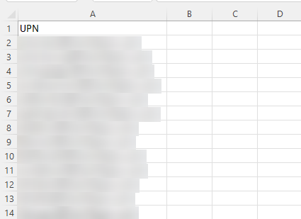
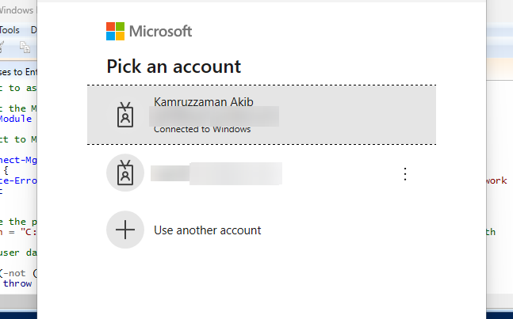
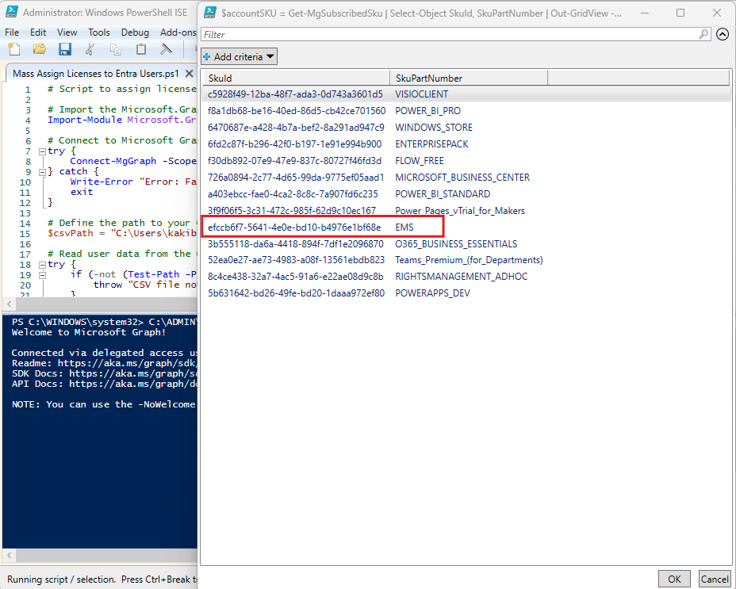
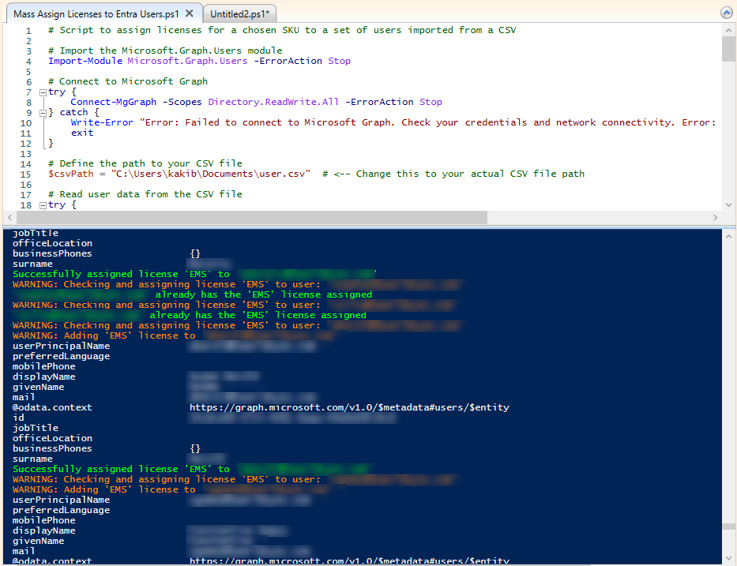
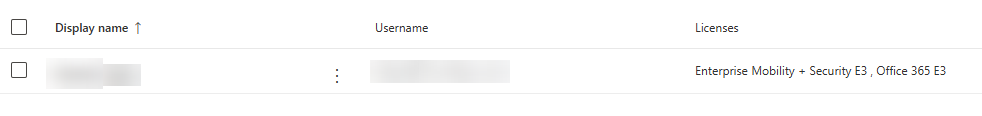

Assigning licences one by one in the admin centre doesn’t scale during onboarding waves or migrations. These two scripts read users from a CSV and add or remove the licence you choose, checking each user first. I used the same approach in reverse to reclaim hundreds of unused licences after a tenant integration.
What you need
- Windows PowerShell 5.1, or PowerShell 7 on Windows (the licence picker uses
Out-GridView). - The Microsoft Graph PowerShell SDK.
- An account with the License Administrator or User Administrator role.
Step 1: Install the Microsoft Graph modules
Open PowerShell as administrator and run:
Install-Module Microsoft.Graph -AllowClobberStep 2: Prepare the CSV
One column with the header UPN (or UserPrincipalName), one user per row:
UPN
alex.wilber@contoso.com
megan.bowen@contoso.com
lee.gu@contoso.com
Step 3: Get the script
Add-LicensesFromCsv.ps1In the script libraryDownloadShow the full script (115 lines)
<#
.SYNOPSIS
Assigns one Microsoft 365 licence to every user listed in a CSV file.
.DESCRIPTION
Reads user principal names (UPNs) from a CSV file, lets you pick a licence (SKU)
from the tenant in a grid, then assigns it to each user who does not already have it.
Users who already have the licence are skipped. Users with no usage location are
skipped too, because Microsoft 365 cannot assign a licence without one.
Run it with -WhatIf first to see what would change without changing anything.
.PARAMETER CsvPath
Path to the CSV file. It needs a column named UPN (or UserPrincipalName).
.EXAMPLE
.\Add-LicensesFromCsv.ps1 -CsvPath .\users.csv -WhatIf
Dry run: shows which users would get the licence.
.EXAMPLE
.\Add-LicensesFromCsv.ps1 -CsvPath .\users.csv
Assigns the licence you pick to every user in users.csv.
.NOTES
Author : Kamruzzaman Akib
Modules : Microsoft.Graph.Authentication, Microsoft.Graph.Users,
Microsoft.Graph.Identity.DirectoryManagement
Permissions : LicenseAssignment.ReadWrite.All, User.Read.All, Organization.Read.All (delegated)
Admin role : License Administrator or User Administrator
The licence picker uses Out-GridView, which needs Windows.
#>
#Requires -Modules Microsoft.Graph.Authentication, Microsoft.Graph.Users, Microsoft.Graph.Identity.DirectoryManagement
[CmdletBinding(SupportsShouldProcess)]
param(
[Parameter(Mandatory)]
[ValidateScript({ Test-Path -Path $_ -PathType Leaf })]
[string]$CsvPath
)
# --- Read and check the CSV -------------------------------------------------
$rows = @(Import-Csv -Path $CsvPath)
if ($rows.Count -eq 0) {
throw "The CSV file '$CsvPath' is empty."
}
$upnColumn = $rows[0].PSObject.Properties.Name |
Where-Object { $_ -in 'UPN', 'UserPrincipalName' } |
Select-Object -First 1
if (-not $upnColumn) {
throw 'The CSV file needs a column named UPN or UserPrincipalName.'
}
# --- Connect to Microsoft Graph ---------------------------------------------
Connect-MgGraph -Scopes 'LicenseAssignment.ReadWrite.All', 'User.Read.All', 'Organization.Read.All' -NoWelcome -ErrorAction Stop
# --- Pick the licence --------------------------------------------------------
$sku = Get-MgSubscribedSku -ErrorAction Stop |
Select-Object SkuPartNumber, SkuId, ConsumedUnits,
@{ Name = 'Available'; Expression = { $_.PrepaidUnits.Enabled - $_.ConsumedUnits } } |
Out-GridView -Title 'Select the licence to assign' -OutputMode Single
if (-not $sku) {
Write-Warning 'No licence selected. Nothing was changed.'
return
}
Write-Host "Selected licence: $($sku.SkuPartNumber) ($($sku.SkuId))" -ForegroundColor Cyan
# --- Assign the licence to each user ----------------------------------------
$assigned = 0; $skipped = 0; $failed = 0
foreach ($row in $rows) {
$upn = "$($row.$upnColumn)".Trim()
if (-not $upn) { continue }
try {
$user = Get-MgUser -UserId $upn -Property Id, UserPrincipalName, UsageLocation, AssignedLicenses -ErrorAction Stop
} catch {
Write-Warning "$upn : could not find or read this user. $($_.Exception.Message)"
$failed++
continue
}
if ($user.AssignedLicenses.SkuId -contains $sku.SkuId) {
Write-Host "$upn already has $($sku.SkuPartNumber). Skipped." -ForegroundColor DarkGray
$skipped++
continue
}
if (-not $user.UsageLocation) {
Write-Warning "$upn has no usage location, so a licence cannot be assigned. Set one and run the script again."
$skipped++
continue
}
if ($PSCmdlet.ShouldProcess($upn, "Assign licence $($sku.SkuPartNumber)")) {
$body = @{
addLicenses = @(@{ skuId = $sku.SkuId })
removeLicenses = @()
} | ConvertTo-Json -Depth 5
try {
Invoke-MgGraphRequest -Method POST -Uri "https://graph.microsoft.com/v1.0/users/$($user.Id)/assignLicense" `
-Body $body -ContentType 'application/json' -ErrorAction Stop | Out-Null
Write-Host "$upn : assigned $($sku.SkuPartNumber)" -ForegroundColor Green
$assigned++
} catch {
Write-Warning "$upn : could not assign the licence. $($_.Exception.Message)"
$failed++
}
}
}
Write-Host ''
Write-Host "Done. Assigned: $assigned Skipped: $skipped Failed: $failed" -ForegroundColor CyanWhat it does, in order:
- Checks that the CSV has a
UPNorUserPrincipalNamecolumn. - Connects to Microsoft Graph with only the permissions it needs:
LicenseAssignment.ReadWrite.All,User.Read.AllandOrganization.Read.All. - Lists every licence in the tenant, with how many are still available, and lets you pick one.
- For each user, skips anyone who already has the licence or has no usage location, then assigns it with the Graph
assignLicensecall. - Finishes with a count of assigned, skipped and failed users.
Step 4: Run it
- Do a dry run first. Nothing changes; you see a “What if” line for every user who would get the licence:
.\Add-LicensesFromCsv.ps1 -CsvPath .\users.csv -WhatIf - Run it for real and sign in with an admin account when prompted:
.\Add-LicensesFromCsv.ps1 -CsvPath .\users.csv
Sign in with an admin account - A grid lists every licence in the tenant. Pick the one to assign (in this example EMS, Enterprise Mobility + Security E3) and click OK.

Choose the licence (SKU) from the grid - The script works through the list, skipping users who already have the licence and reporting each assignment.

Output from a real run (user names blurred) 
The licence now shows on the user
If PowerShell refuses to run the file, see Fix “running scripts is disabled on this system”.
Removing licences
The companion script works the same way (same CSV, same licence picker, same -WhatIf dry run) but removes the licence. It also checks whether a user gets the licence through group-based licensing. Those licences can’t be removed one user at a time, so instead of failing, the script tells you to take the user out of the licensing group.
Remove-LicensesFromCsv.ps1In the script libraryDownloadShow the full script (118 lines)
<#
.SYNOPSIS
Removes one Microsoft 365 licence from every user listed in a CSV file.
.DESCRIPTION
Reads user principal names (UPNs) from a CSV file, lets you pick a licence (SKU)
from the tenant in a grid, then removes it from each user who has it.
Users who do not have the licence are skipped. Licences that a user gets through
group-based licensing cannot be removed one user at a time, so those users are
skipped with a message: remove them from the licensing group instead.
Run it with -WhatIf first to see what would change without changing anything.
.PARAMETER CsvPath
Path to the CSV file. It needs a column named UPN (or UserPrincipalName).
.EXAMPLE
.\Remove-LicensesFromCsv.ps1 -CsvPath .\leavers.csv -WhatIf
Dry run: shows which users would lose the licence.
.EXAMPLE
.\Remove-LicensesFromCsv.ps1 -CsvPath .\leavers.csv
Removes the licence you pick from every user in leavers.csv.
.NOTES
Author : Kamruzzaman Akib
Modules : Microsoft.Graph.Authentication, Microsoft.Graph.Users,
Microsoft.Graph.Identity.DirectoryManagement
Permissions : LicenseAssignment.ReadWrite.All, User.Read.All, Organization.Read.All (delegated)
Admin role : License Administrator or User Administrator
The licence picker uses Out-GridView, which needs Windows.
#>
#Requires -Modules Microsoft.Graph.Authentication, Microsoft.Graph.Users, Microsoft.Graph.Identity.DirectoryManagement
[CmdletBinding(SupportsShouldProcess)]
param(
[Parameter(Mandatory)]
[ValidateScript({ Test-Path -Path $_ -PathType Leaf })]
[string]$CsvPath
)
# --- Read and check the CSV -------------------------------------------------
$rows = @(Import-Csv -Path $CsvPath)
if ($rows.Count -eq 0) {
throw "The CSV file '$CsvPath' is empty."
}
$upnColumn = $rows[0].PSObject.Properties.Name |
Where-Object { $_ -in 'UPN', 'UserPrincipalName' } |
Select-Object -First 1
if (-not $upnColumn) {
throw 'The CSV file needs a column named UPN or UserPrincipalName.'
}
# --- Connect to Microsoft Graph ---------------------------------------------
Connect-MgGraph -Scopes 'LicenseAssignment.ReadWrite.All', 'User.Read.All', 'Organization.Read.All' -NoWelcome -ErrorAction Stop
# --- Pick the licence --------------------------------------------------------
$sku = Get-MgSubscribedSku -ErrorAction Stop |
Select-Object SkuPartNumber, SkuId, ConsumedUnits,
@{ Name = 'Available'; Expression = { $_.PrepaidUnits.Enabled - $_.ConsumedUnits } } |
Out-GridView -Title 'Select the licence to remove' -OutputMode Single
if (-not $sku) {
Write-Warning 'No licence selected. Nothing was changed.'
return
}
Write-Host "Selected licence: $($sku.SkuPartNumber) ($($sku.SkuId))" -ForegroundColor Cyan
# --- Remove the licence from each user --------------------------------------
$removed = 0; $skipped = 0; $failed = 0
foreach ($row in $rows) {
$upn = "$($row.$upnColumn)".Trim()
if (-not $upn) { continue }
try {
$user = Get-MgUser -UserId $upn -Property Id, UserPrincipalName, AssignedLicenses, LicenseAssignmentStates -ErrorAction Stop
} catch {
Write-Warning "$upn : could not find or read this user. $($_.Exception.Message)"
$failed++
continue
}
if ($user.AssignedLicenses.SkuId -notcontains $sku.SkuId) {
Write-Host "$upn does not have $($sku.SkuPartNumber). Skipped." -ForegroundColor DarkGray
$skipped++
continue
}
# A licence that only comes from a group cannot be removed from the user directly.
$states = @($user.LicenseAssignmentStates | Where-Object { $_.SkuId -eq $sku.SkuId })
if ($states.Count -gt 0 -and -not ($states | Where-Object { -not $_.AssignedByGroup })) {
Write-Warning "$upn gets $($sku.SkuPartNumber) from a group. Remove the user from that group instead."
$skipped++
continue
}
if ($PSCmdlet.ShouldProcess($upn, "Remove licence $($sku.SkuPartNumber)")) {
$body = @{
addLicenses = @()
removeLicenses = @($sku.SkuId)
} | ConvertTo-Json -Depth 5
try {
Invoke-MgGraphRequest -Method POST -Uri "https://graph.microsoft.com/v1.0/users/$($user.Id)/assignLicense" `
-Body $body -ContentType 'application/json' -ErrorAction Stop | Out-Null
Write-Host "$upn : removed $($sku.SkuPartNumber)" -ForegroundColor Green
$removed++
} catch {
Write-Warning "$upn : could not remove the licence. $($_.Exception.Message)"
$failed++
}
}
}
Write-Host ''
Write-Host "Done. Removed: $removed Skipped: $skipped Failed: $failed" -ForegroundColor Cyan.\Remove-LicensesFromCsv.ps1 -CsvPath .\leavers.csv -WhatIf
.\Remove-LicensesFromCsv.ps1 -CsvPath .\leavers.csv